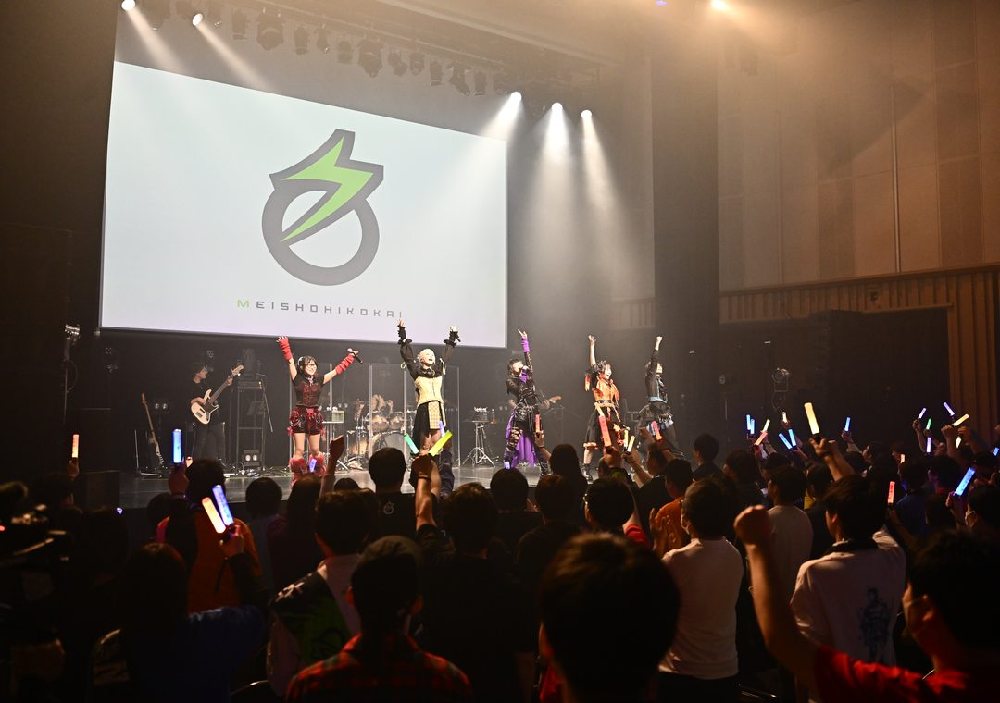

名称非公開 新体制メンバーオーディション
NEW
MEMBER
AUDITION
これまでの音楽と表現を、
次のステージへ。
PRODUCED BY ANCHOR
応募受付
2026.11.01 — 11.23
二次審査 12.01—12.05合宿審査 12.05—12.23新体制発表 2027.01.24
JUDGES タケヤキ翔 廣瀬大介 山之口理香子 ほか
↓ リンクから応募する

これまでの音楽と表現を、
次のステージへ。